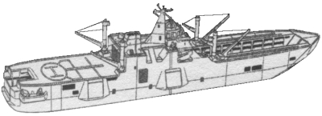
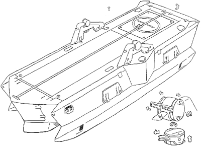
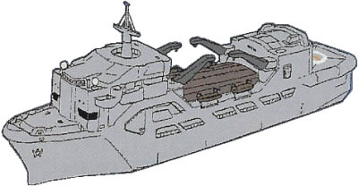
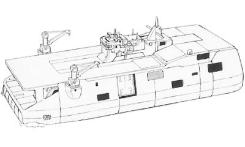

| Cargo Ferry |
|
|   |
|
General and Technical Data |
|
|
Unit Type: transport ferry Operator: Multiple Operators Propulsion system: 1x propeller Hangar capacity: 1 MS or 2 infantry, 3 cargo Launch catapults: 0 Fixed armaments: None Technical and Historical Notes One of many different designs of trade ship, these ferries are used to transport goods across extended distances by both the Earth Federation and private interests. Many Earth Federation ferries have been refitted for a minor AA compliment, but the vast majority are unarmed. |
 RPG quick stats sheet
RPG quick stats sheet